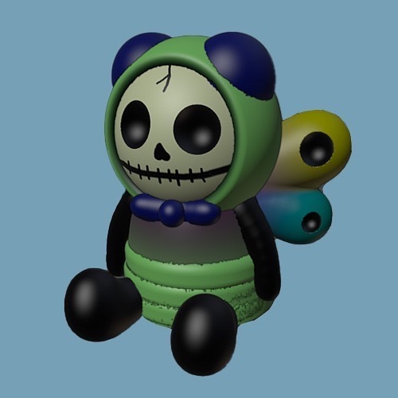

iDog

hexBug

fella

fishFurryBones
dragonFurryBones

sockMonkeyKeyChain
penguinFurryBones

caterpillarFurryBones

pikmin
balloonDog
The models exist within Luvdrive, a 3D simulation game where players collect objects scattered around a small house. When an item is collected, however, it disappears permanently from view. This mechanic plays with the tension between possession and loss, mirroring how memory can act: partial, fleeting, and irretrievable. This project explores collection and archive as both a personal and speculative act. I am interested in how collecting, especially of lost or past items, reflects care, memory, and meaning. By reimagining physical objects digitally, the work becomes a process of preservation: not just storing, but reinterpreting. It asks what is worth remembering and what stories emerge when we choose to keep something, even in virtual form. Each model attempts to recall the original physical object it’s based on, or at least how I remember it. Sometimes that memory is sharp (or the object is right in front of me), and other times it is fuzzy or fragmented (perhaps an item I lost in childhood). Any imperfections become part of the objects form, mimicking how memory distorts, and how digital space allows for abstraction and personal myth-making. This project deepened my understanding of why archiving and collecting resonate so strongly in my practice. It became clear that modeling isn't just about restoring objects, it’s about remembering their presence and ruminating in the absence, realizing the emotional weight they carry.